Designing Effective Data Visualizations
Pedro Cardoso-Leite
Let’s start with a story…
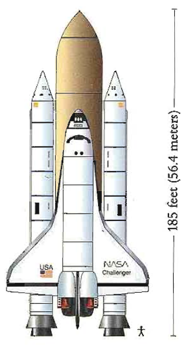
The Challenger Space Shuttle January 28, 1986
The night before…
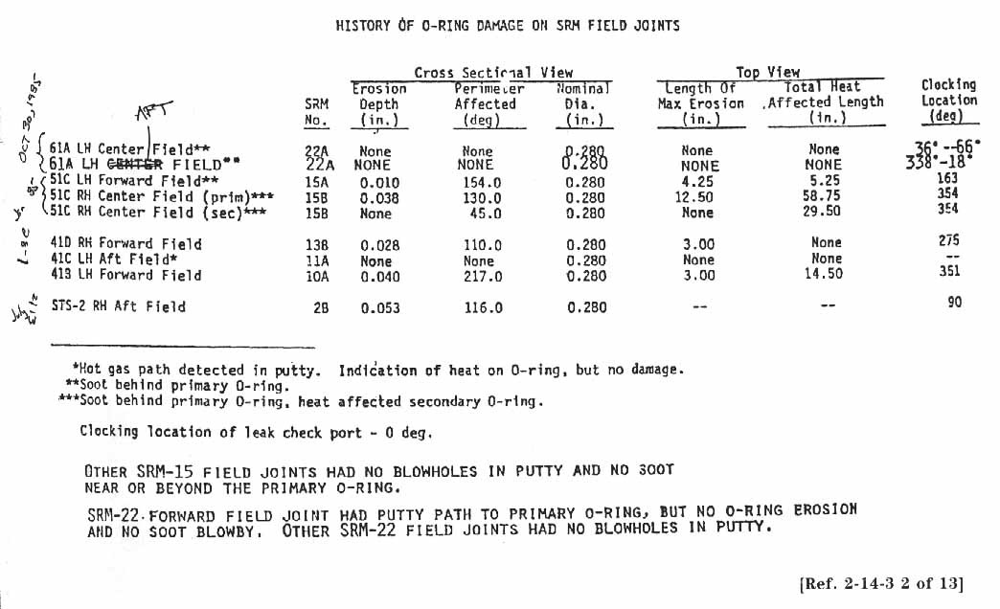
What’s the issue?
O-rings
might get damaged
when it’s too cold.
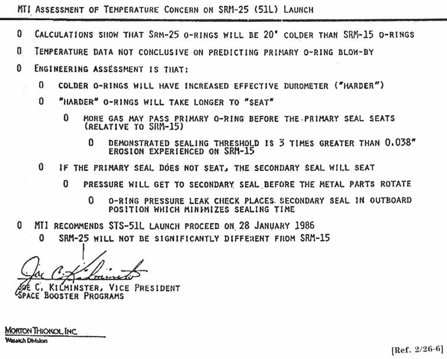
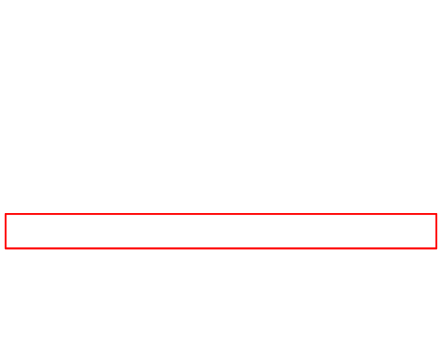
What happened?
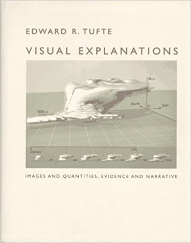
What happened?
- What was the concern?
- What data / information should they have shared?
Of the 13 charts circulated by Thiokol managers and engineers to the scattered teleconferees,
six contained no tabled data about either O-ring temperature, O-ring blow-by, or O-ring anomaly (these were primarily outlines of arguments being made by the Thiokol engineers).
Of the seven remaining charts containing data,
six of them included data on either launch temperatures or O-ring anomaly
but not both in relation to each other.
Only one chart relating O-ring temperature and O-ring damage was prepared by a Thiokol engineer.
Let’s focus on this one document.

What do you think about this chart?
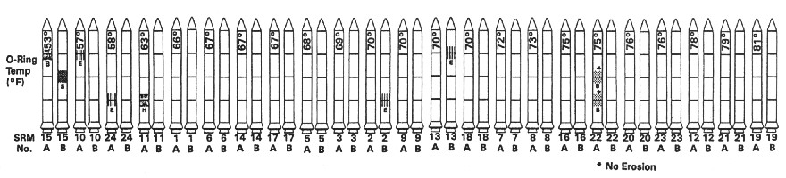

Edward Tufte’s redesigned chart from “Visual Explanations”

Edward Tufte’s redesigned chart from “Visual Explanations”
One more story…
There are now more modern version of the John Snow data exploration
https://flourish.studio/blog/masters-john-snow/
Let’s have a look at some numbers…
What can you tell me about these four datasets?
Are they the same?
What can you say about these four datasets?
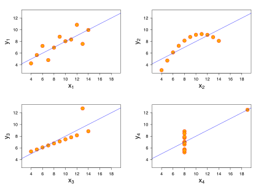
Anscombe’s Quartet
- Constructed in 1973 by statistician Francis Anscombe
- Demonstrates the importance of graphing data
- Shows the effect of outliers on statistical properties
- Intended to counter the impression among statisticians that “numerical calculations are exact, but graphs are rough.”
“The greatest value of a picture is when it forces us to notice what we never expected to see.”
John W. Tukey
The data science workflow
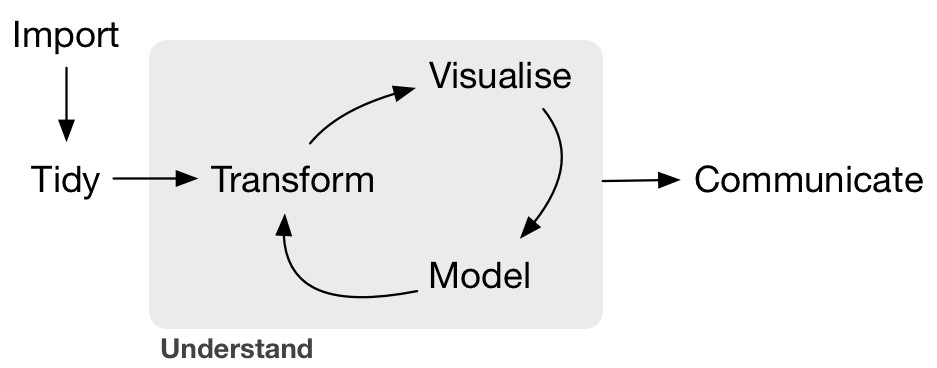
The two reasons for visualizing data
What have learned?
The two purposes of data visualization
The key function of data visualization is to move information from point A to point B.
point B is the designer’s own mind.
point B is the mind of the reader.”
Two “types” of visualizing data
Exploration
iterate fast
check and recheck
Explanation
deliberate, purposeful
specific, perfect
Beyond informing…
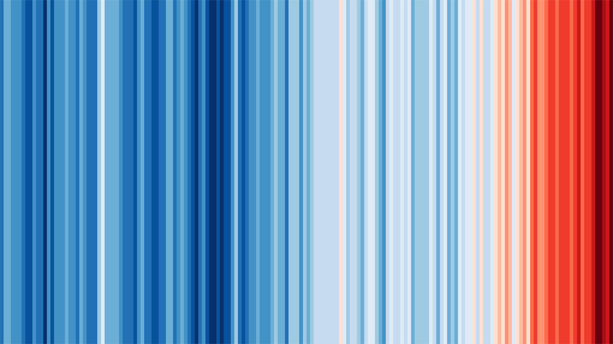
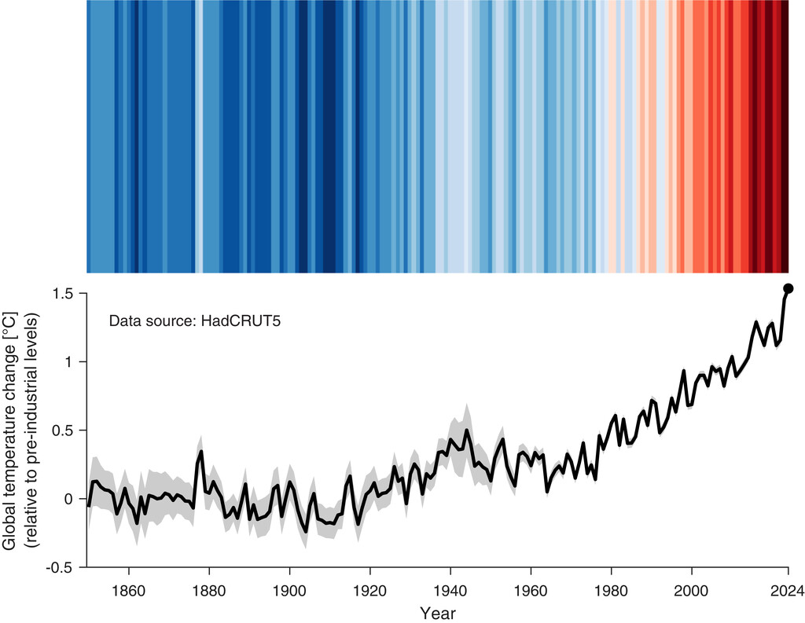
https://doi.org/10.1175/BAMS-D-24-0212.1
https://showyourstripes.info/showcase
Make it personal.
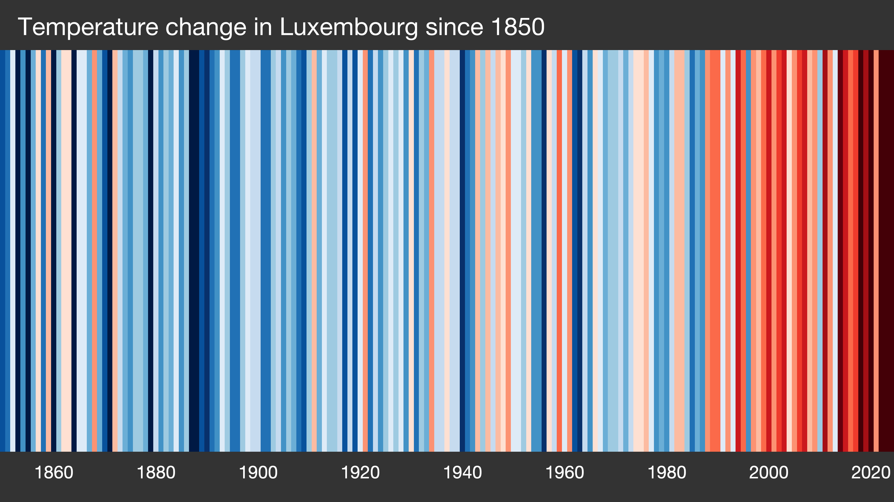
The purpose of this course
Effective data visualization matters!
It’s not about programming or using a specific tool.
It’s about Designing Effective Data Visualizations.
Resources
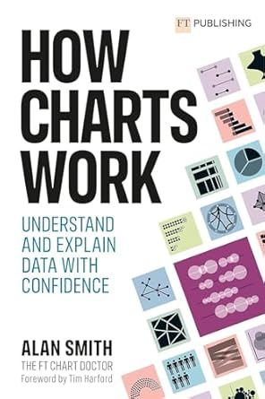
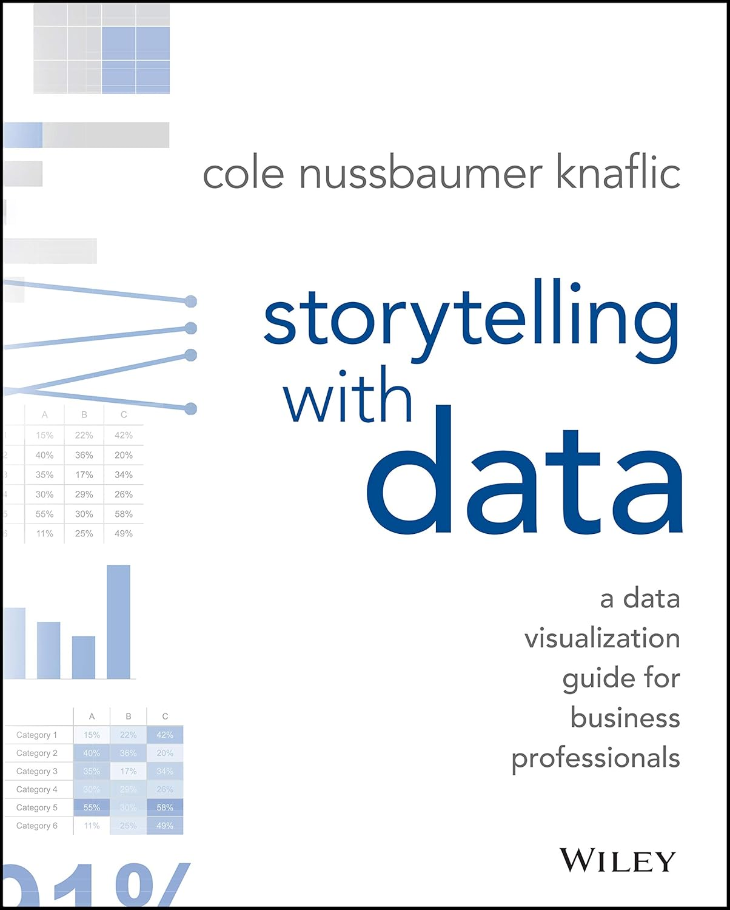
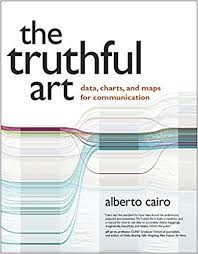
Assignment
- Look for (open access) articles in your field of interest
- Find 2 figures that you like
- Find 2 figures that you don’t like (all from different papers)
- Explain briefly for each figure why you like/dislike it
- Upload your document on Moodle
- one page per figure + your comment
- name the file using your
<lastname>_graph_selection.pdfpattern